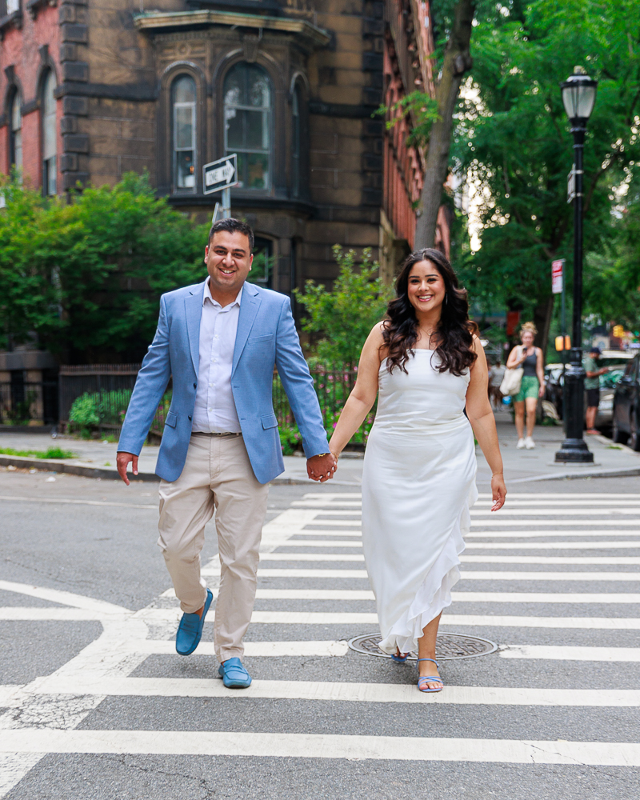
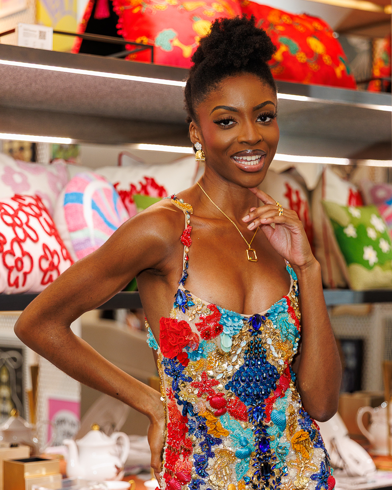
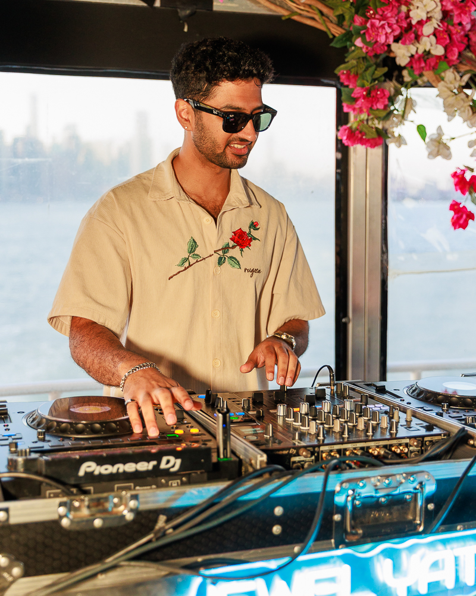
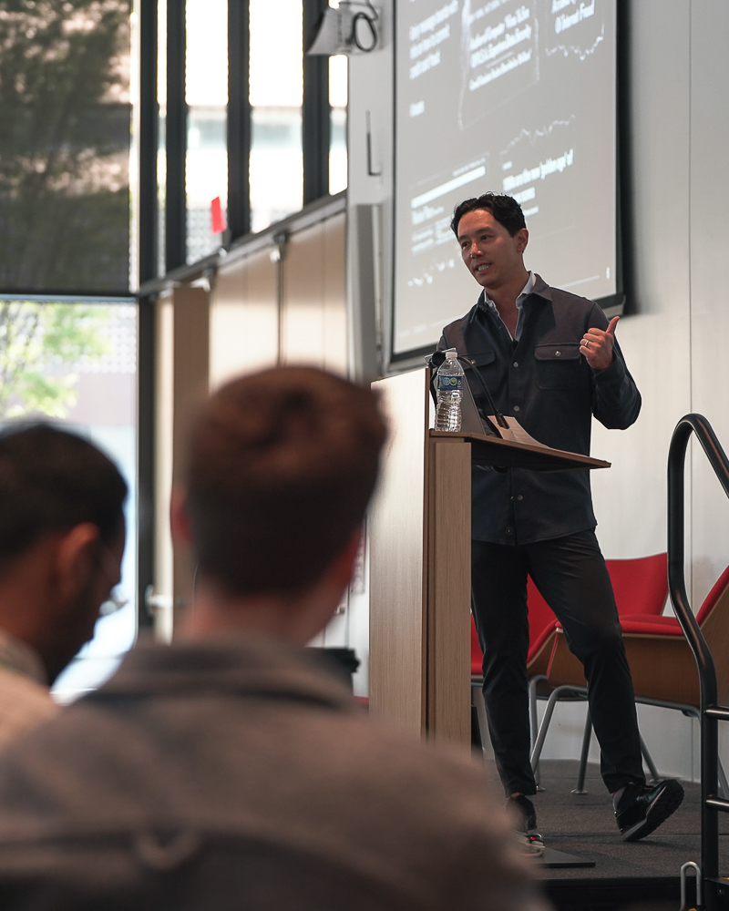
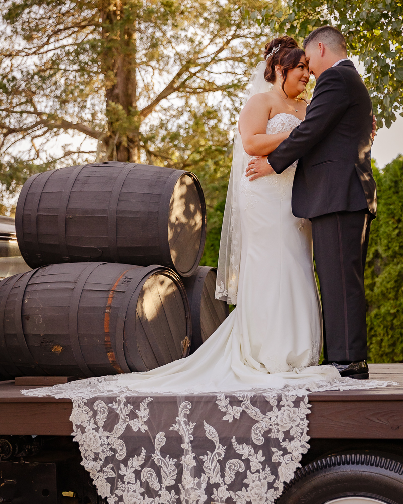
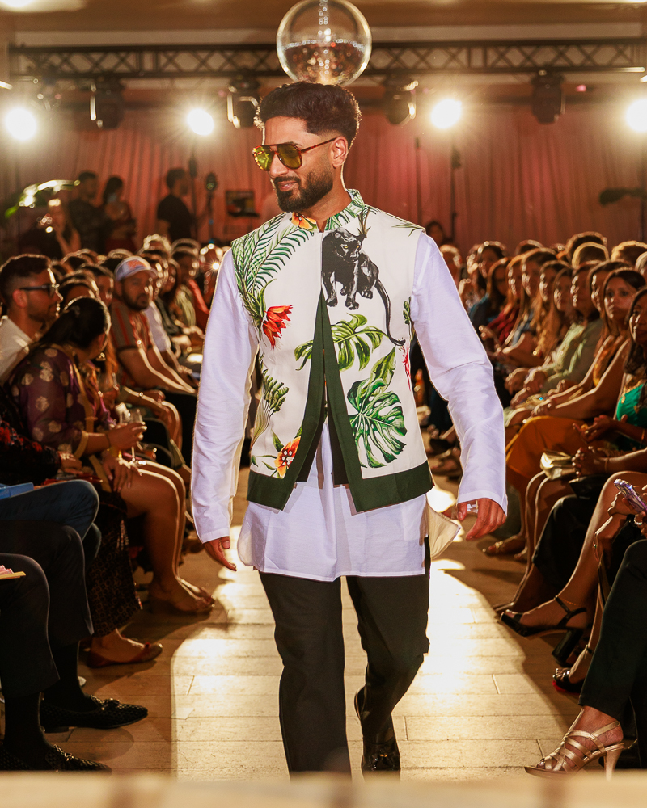

Moments worth
remembering.
Full event production, photography, and videography across live music, weddings, conferences, and corporate events in NYC and the northeast — via Rare Event Productions.





Live Music &
Concerts
Multi-camera coverage of live performances — capturing the energy of the room, the detail of the stage, and the reaction of the crowd. Built on years of NYC music events — from intimate venues to sold-out nights.
Southern Hospitality — Watch a set →
Conferences &
Speakers
Professional coverage for conferences, panels, and keynotes — in-room photography, stage video, and broadcast-ready recordings. Delivered ready for social, press, and archiving. Experienced with large-scale, multi-session events.
Melagen Labs × Satlyt — View announcement →
Weddings &
Engagements
Full-day wedding photography and videography — from getting-ready moments through reception. Documentary in style, attentive in execution. Every detail treated as if it's the only one that matters, because it is.

Fashion &
Editorial
Styled shoots, editorial sessions, and fashion events — from runway to lookbook. Clean, intentional framing with an eye for light and composition. Delivered as high-resolution selects ready for publication or campaign use.
Have a
question?
Based in New York City, I cover events throughout the northeast — NYC, New Jersey, Boston, Philly, and surrounding areas. Travel to other regions is available for larger engagements. Reach out with your location and I'll let you know what's possible.
For weddings and large conferences, 3–6 months in advance is ideal to ensure availability. For smaller events, mixers, and corporate events, a few weeks is usually sufficient. If you have a tight timeline, reach out anyway — I'll let you know if the date is open.
Edited photo selects are typically delivered within 5–7 business days via a private online gallery. Highlight reels and full video edits are delivered within 2 weeks. Rush turnaround is available if you need deliverables sooner — just mention it when you reach out.
Let's make something
worth remembering.
Whether it's a sold-out concert, a corporate conference, a wedding, or a fashion shoot — reach out with the details and let's talk.